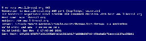
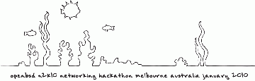

{kind=link}
p2k19: ports hackathon
Nov 5 - 12, 2019
Bucharest, Romania
18 developers
Funded by The OpenBSD Foundation.
{kind=link}
g2k19: general hackathon
May 7 - 14, 2019
Ottawa, Canada
43 developers
Funded by The OpenBSD Foundation.
{kind=link}
t2k19: taipei mini hackathon
Mar 28 - Apr 5, 2019
Taipei, Taiwan
16 developers
Funded by The OpenBSD Foundation and with the support of Kevin Lo and MSI/FUNTORO
{kind=link}
a2k19: antipodean mini hackathon
Jan 17-24, 2019
Wellington, New Zealand
18 developers
Supported by the Victoria University of Wellington and funded by The OpenBSD Foundation.
{kind=link}
l2k18: libressl mini hackathon
Nov 3-11, 2018
Edmonton, Canada
5 developers
Supported by The OpenBSD Foundation.
{kind=link}
n2k18: network hackathon
Sept 6-11, 2018
Ústí nad Labem, Czech Republic
11 developers
Supported by Univerzita Jana Evangelisty Purkyně and funded by Oracle and The OpenBSD Foundation.
{kind=link}
g2k18: general hackathon
Jul 8-13, 2018
Ljubljana, Slovenia
39 developers
Funded by The OpenBSD Foundation and with the support of Mitja Muženič.
{kind=link}
p2k18: ports (and pledge) hackathon
Apr 23-29, 2018
Nantes, France
24 developers
Funded by The OpenBSD Foundation and with the support of Epitech Nantes.
{kind=link}
a2k18: antipodean hackathon
Feb 5-11, 2018
Dunedin, New Zealand
19 developers
Funded by The OpenBSD Foundation and with the support of University of Otago.
{kind=link}
s2k17: snowshoe hackathon
Nov 26 - 29, 2017
Elk Lakes Cabin, BC
10 developers
Funded by ForeTell Technologies and with the support of Xplornet.
{kind=link}
p2k17: ports hackathon
Nov 1 - 6, 2017
Berlin, Germany
23 developers
Funded by The OpenBSD Foundation with the support of IN-Berlin and Hostserver.
{kind=link}
t2k17: general hackathon
Aug 9 - 15, 2017
Toronto, Canada
38 developers
Funded by The OpenBSD Foundation and with the support of University of Toronto.
{kind=link}
d2k17: network mini-hackathon
May 26 - 31, 2017
Starnberg, Germany
24 developers
Funded by The OpenBSD Foundation and with the support of genua.
{kind=link}
e2k17: nano-hackathon
March 25 - 28, 2017
Edmonton, Canada
5 developers
With the support of Bob Beck.
{kind=link}
a2k17: antipodean hackathon
Jan 19 - 26, 2017
Brisbane, Australia
19 developers
Funded by The OpenBSD Foundation and with the support of David Gwynne.

{kind=link}
l2k16: libressl hackathon
Nov 2 - 6, 2016
Toulouse, France
9 developers
Funded by The OpenBSD Foundation with the help of ENSEEIHT and Objectif Libre.
{kind=link}
b2k16: budapest ports hackathon
Oct 31 - Nov 5, 2016
Budapest, Hungary
10 developers
Funded by The OpenBSD Foundation.
{kind=link}
g2k16: general hackathon
Aug 30 - Sep 5, 2016
Cambridge, UK
62 developers
Funded by The OpenBSD Foundation with the help of Computer Laboratory, Cambridge.
{kind=link}
n2k16: network hackathon
Jul 18 - 22, 2016
Prague, Czech Republic
18 developers
Funded by The OpenBSD Foundation and Oracle, with the help of Charles University.
{kind=link}
p2k16: ports hackathon
Apr 25 - 29, 2016
Nantes, France
22 developers
Funded by The OpenBSD Foundation and with the support of Epitech Nantes.
{kind=link}
n2k15: network MP hackathon
Dec 1 - 6, 2015
Hannover, Germany
19 developers
Funded by The OpenBSD Foundation and with the support of Esdenera Networks.
{kind=link}
u2k15: utf8 hackathon
Oct 22 - 27, 2015
Berlin, Germany
22 developers
Funded by The OpenBSD Foundation and with the support of IN-Berlin.
{kind=link}
l2k15: libressl hackathon
Sep 8 - 13, 2015
Faculty of Organization and Informatics, Varaždin, Croatia
17 developers
Funded by The OpenBSD Foundation with help of the Open Systems and Security Lab.
{kind=link}
j2k15: uefi hackathon
Aug 30 - Sep 2, 2015
Nasu, Tochigi, Japan
6 developers
With the support of IIJ innovation institute.
{kind=link}
c2k15: general hackathon
Jul 15 - 21, 2015
SAIT, Calgary
45 developers
Funded by The OpenBSD Foundation and with the support of SAIT.
{kind=link}
p2k15: ports mini hackathon
Apr 2 - 7, 2015
University of Exeter, UK
14 developers
Funded by The OpenBSD Foundation and with the support of Andy Henderson.
{kind=link}
s2k15: southern mini hackathon
Feb 6 - 13, 2015
Brisbane, Australia
21 developers
Funded by The OpenBSD Foundation and with the support of David Gwynne.
{kind=link}
g2k14: general hackathon
July 8 - 14, 2014
Ljubljana, Slovenia
49 developers
Funded by The OpenBSD Foundation and with the support of Mitja Muženič.
{kind=link}
m2k14: mini hackathon
Apr 17 - 22, 2014
Marrakech, Morocco
12 developers
Funded by The OpenBSD Foundation and with the support of Université Cadi Ayyad.
{kind=link}
n2k14: mini hackathon
Jan 18 - 25, 2014
Dunedin, New Zealand
15 developers
Funded by ForeTell Technologies and with the support of University of Otago.
{kind=link}
b2k13: mini hackathon
Oct 17 - 21, 2013
Berlin, Germany
21 developers
Funded by The OpenBSD Foundation and with the support of IN-Berlin.
{kind=link}
t2k13: general hackathon
May 29 - Jun 5, 2013
Toronto, Canada
43 developers
Funded by The OpenBSD Foundation and with the support of University of Toronto.

n2k13: network hackathon
Jan 13 - 19, 2013
Dunedin, New Zealand
17 developers
Funded by The OpenBSD Foundation and with the support of University of Otago.
{kind=link}
c2k12: coimbra hackathon
Nov 14 - 20, 2012
Coimbra, Portugal
10 developers
Funded by The OpenBSD Foundation and with the support of University of Coimbra.
{kind=link}
p2k12: ports hackathon
Oct 8 - 13, 2012
Budapest, Hungary
9 developers
Funded by donations to The OpenBSD Project.
{kind=link}
n2k12: network hackathon
Sep 17 - 21, 2012
Starnberg, Germany
23 developers
Funded by genua.
{kind=link}
g2k12: general hackathon
Jul 7 - 14, 2012
Budapest, Hungary
41 developers
Funded by The OpenBSD Foundation.
{kind=link}
r2k12: rthreads hackathon
Apr 10 - 14, 2012
Paris, France
16 developers
Funded by The OpenBSD Foundation and support of Institute Henri Poincaré and Paris-Sud University.

p2k11: Ports hackathon
Nov 12 - 18, 2011
Budapest, Hungary
15 developers
Funded by donations to the OpenBSD Project.

a2k11: ARM hackathon
Nov 5 - 12, 2011
Coimbra, Portugal
8 developers
Funded by The OpenBSD Foundation and with the support of University of Coimbra.
{kind=link}
s2k11: General hackathon
Sep 16 - 23, 2011
Ljubljana, Slovenia
25 developers
Funded by The OpenBSD Foundation and with the support of Mitja Muženič.
{kind=link}
c2k11: General hackathon
Jul 2 - 9, 2011
Edmonton, Alberta, Canada
36 developers
Funded by The OpenBSD Foundation.
{kind=link}
k2k11: Kernel hackathon
Apr 1 - 7, 2011
Hafnarfjordur, Iceland
15 developers
Funded by The OpenBSD Foundation.
{kind=link}
p2k10: Ports hackathon
Oct 23 - 29, 2010
Budapest, Hungary
19 developers
Funded by donations to the OpenBSD Project.
{kind=link}
j2k10: mini-hackathon in Japan
Sep 19 - 25, 2010
Akiyamago, Sakae Mura, Nagano, Japan
19 developers
{kind=link}
c2k10: General hackathon
Jun 25 - Jul 3, 2010
Edmonton, Alberta
46 developers
Funded by The OpenBSD Foundation.

{kind=link}
n2k10: Network hackathon
Jan 9 - 15, 2010
Melbourne, Australia
17 developers
Funded by The OpenBSD Foundation and support of Victorian Partnership for Advanced Computing

h2k9: Hardware hackathon
Nov 21 - 27, 2009
Coimbra, Portugal
15 developers
Funded by donations to the OpenBSD Project and with the support of University of Coimbra.
{kind=link}
p2k9: Ports hackathon
Oct 9 - 16, 2009
Budapest, Hungary
14 developers
Funded by donations to the OpenBSD Project.
{kind=link}
f2k9: Filesystem/uvm hackathon
Aug 7 - 14, 2009
Stockholm, Sweden
14 developers
Funded by .se Foundation.
{kind=link}
c2k9: General hackathon
May 30 - Jun 7, 2009
Edmonton, Alberta
46 developers
Funded by donations to the OpenBSD Project.
{kind=link}
n2k9: Network hackathon
Jan 26 - 30, 2009
Basel, Switzerland
19 developers
{kind=link}
h2k8: Hardware hackathon
Nov 20 - 27, 2008
Coimbra, Portugal
18 developers
Funded by donations to the OpenBSD Project and with the support of University of Coimbra.
{kind=link}
p2k8: Ports hackathon
Oct 24 - 31, 2008
Budapest, Hungary
13 developers
Funded by donations to the OpenBSD Project.
{kind=link}
c2k8: General hackathon
June 6-15, 2008
Edmonton, Alberta
55 developers
Funded by The OpenBSD Foundation.
{kind=link}
n2k8: Network hackathon
May 5-10, 2008
Ito, Japan
18 developers
Funded by donations to the OpenBSD Project and Mark Uemura.
{kind=link}
h2k7: Hardware hackathon
Nov 22 - 29, 2007
Coimbra, Portugal
11 developers
Funded by donations to the OpenBSD Project and with the support of University of Coimbra.
{kind=link}
p2k7: Focused on ports
Oct 22 - 28, 2007
Budapest, Hungary
13 developers
Funded by donations to the OpenBSD Project.
{kind=link}
c2k7: General hackathon
May 25 - Jun 2, 2007
Calgary, Alberta
50 developers
Funded by donations to the OpenBSD Project.
{kind=link}
f2k7: Focused on Filesystems
Apr 10 - 15, 2007
Vienna, Austria
14 developers
Funded by donations to the OpenBSD Project.
{kind=link}
h2k6: Focused on drivers for hardware
Nov 25 - 30, 2006
Coimbra, Portugal
14 developers
Funded by donations to the OpenBSD Project and with the support of University of Coimbra.
{kind=link}
p2k6: Focused on ports
Oct 18 - 22, 2006
Budapest, Hungary
14 developers
Funded by donations to the OpenBSD Project.
{kind=link}
k2k6: Focused on IPSEC and IKE
Aug 28 - Sep 1, 2006
Schloss Kransberg, Germany
14 developers
{kind=link}
r2k6: Focused on network routing
Jun 14 - 18, 2006
Hamburg, Germany
6 developers
Support of Henning Brauer.
{kind=link}
c2k6: General hackathon
May 21 - 29, 2006
Calgary, Alberta
47 developers
Funded by donations to the OpenBSD Project.
{kind=link}
v2k5: Focused on ports
Nov 1 - 4, 2005
San Servolo, Venice, Italy
12 developers
Funded by donations to the OpenBSD Project.
{kind=link}
c2k5: General hackathon
May 21 - 28, 2005
Calgary, Alberta
60 developers
Funded by donations to the OpenBSD Project.
{kind=link}
c2k4: General hackathon
Jun 19 - 26, 2004
Calgary, Alberta
46 developers
Funded by donations to the OpenBSD Project.
{kind=link}
pf2k4: Focused on pf development
Apr 24 - 28, 2004
Sechelt, BC
12 developers
Support of Ryan McBride.

c2k3: General hackathon
May 8 - 20, 2003
Calgary, Alberta
51 developers
Funded by NLnet (after DARPA pulled out their support).
{kind=link}
c2k2: General hackathon
Jun 4 - 12, 2002
Calgary, Alberta
42 developers
Funded by DARPA.
c2k1-2: Focused on sparc64
Aug 17 - 20, 2001
Washington, DC
Funded by DARPA with support of USENIX.
c2k1: Birth of PF
Jun 21 - 26, 2001
Cambridge, Massachusetts
25 developers
Funded by DARPA with the support of MIT.
c2k: General hackathon
Jun 15 - 18, 2000
Calgary, Alberta
18 developers
Funded by donations to the OpenBSD Project.
c99: Focused on IPSEC
Jun 4 - 6, 1999
Calgary, Alberta
10 developers
Funded by Theo de Raadt.